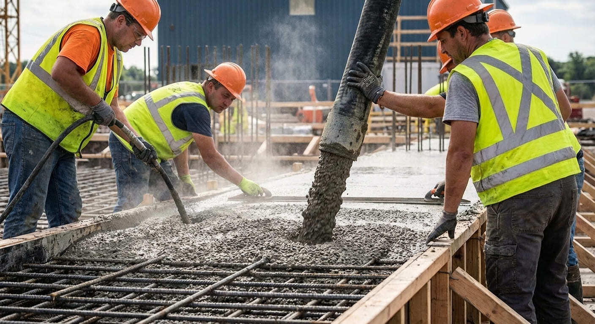

Фундаменты и бетонные конструкции
Монолитные работы в Калининграде
Выполняем монолитные работы для частных домов и строительных объектов: фундаментные плиты, ленты, ростверки, перекрытия, колонны и армированные бетонные элементы.
- Под частное строительство
- Соблюдение технологии
- Контроль бетонирования
Какие монолитные работы выполняем

Этапы монолитных работ
- Оценка участка, нагрузок и проектного решения.
- Подготовка основания, опалубки и армирования.
- Приемка и заливка бетона с соблюдением технологии.
- Уход за бетоном, распалубка и контроль геометрии.
Что влияет на стоимость
FAQ по монолитным работам
Можно заказать как отдельный фундамент, так и полный комплекс монолитных работ по объекту.
Да, это отдельная услуга. Часто берем в работу только бетонную часть и подготовку основания.
Да, до старта работ формируем смету по объемам, технологии и условиям участка.
Нужны монолитные работы под дом или объект
Подготовим расчет по фундаменту, плитам или армированным конструкциям после краткого описания задачи.
Контакты
Опишите фундамент, площадь, тип объекта или отправьте проект на расчет.
+7(921)618-23-77- Telegram: @CKcaizer
- Email: kaizer.sk@yandex.ru